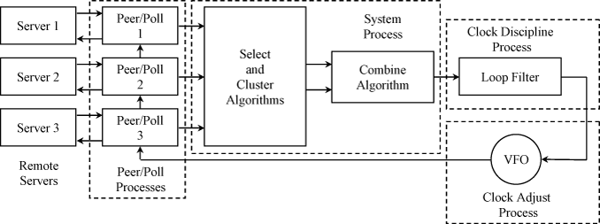

Last update: 11-Sep-2010 17:51 UTC
NTP time synchronization services are widely available in the public Internet. The public NTP subnet in late 2010 includes several thousand servers in most countries and on every continent of the globe, including Antarctica, and sometimes in space and on the sea floor. These servers support a total population estimated at over 25 million computers in the global Internet.
The NTP subnet operates with a hierarchy of levels, where each level is assigned a number called the stratum. Stratum 1 (primary) servers at the lowest level are directly synchronized to national time services. Stratum 2 (secondary) servers at the next higher level are synchronize to stratum 1 servers and so on. Normally, NTP clients and servers with a relatively small number of clients do not synchronize to public primary servers. There are several hundred public secondary servers operating at higher strata and are the preferred choice.
This page preetns an overview of the NTP daemon included in this distribution. We refer to this as the reference implementation only because it was the one used to test and validate the NTPv4 specificatioin RFC-5905. It is best read in conjunction with the briefings on the Network Time Synchronization Research Project page.

Figure 1. NTP Daemon Processes and Algorithms
The overall organization of the NTP daemon is shown in Figure 1. It is useful in this context to consider the daemon as both a client of downstatum servers and as a server for upstratum clients. It includes a pair of peer/poll processes for each reference clock or remote server used as a synchronization source. The poll process sends NTP packets at intervals ranging from 8 s to 36 h. The peer process receives NTP packets and runs the on-wire protocol that collects four timestamps: the origin timestamp T1 upon departure of the client request and the receive timestamp T2 upon arrival at the server, the transmit timestamp T3 upon departure of the server reply and the destination timestamp T4 upon arrival at the client. These timestamps are used to calculate the clock offset and roundtrip delay:
offset = [(T2 -T1) + (T3 - T4)] / 2
delay = (T4 - T1) - (T3 - T2).
Those sources that have passed a number of sanity checks are declared selectable. From the selectable population the statistics are used by the select algorithm to determine a number of truechimers according to correctness principles. From the truechimer population a number of survivors are determined on the basis of statistical principles. One of the survivors is declared the system peer and the system statistics inherited from it. The combine algorithm computes a weighted average of the peer offset and jitter to produce the final values used by the clock discipline algorithm to adjust the system clock time and frequency.
When started, the program requires several measurements sufficient data fro these a algorithms to work properly before setting the clock. As the default poll interval is 64 s, it can take several minutes to set the clock. The time can be reduced using the iburst option on the Server Options page. For additional details about the clock filter, select, cluster and combine algorithms see the Architecture Briefing on the NTP Project Page.
Each source is characterized by the offset and delay measured by the on-wire protocol and the dispersion and jitter calculated by the clock filter algorithm of the peer process. Each time an NTP packet is received from a source, the dispersion is initialized by the sum of the precisions of the server and client. The offset, delay and dispersion values are inserted as the youngest stage of an 8-stage shift register, thus discarding the oldest stage. Subsequently, the dispersion in each stage is increased at a fixed rate of 15 ms/s, representing the worst case error due to skew between the server and client clocks. The clock filter algorithm in each peer process selects the stage with the lowest delay, which generally represents the most accurate values, and the associated offset and delay values become the peer variables of the same name. The peer dispersion continues to grow at the same rate as the register dispersion. The peer dispersion is determined as a weighted average of the dispersion samples in the shift register. Finally, the peer jitter is determined as the root-mean-square (RMS) average of all the offset samples in the shift register relative to the selected sample.
The clock filter algorithm continues to process packets in this way until the source is no longer reachable. In this case the algorithm inserts dummy samples with "infinite" dispersion are inserted in the shift register, thus displacing old samples.
The composition of the survivor population and the system peer selection is redetermined as each update from each server is received. The system variables are copied from the peer variables of the same name and the system stratum set one greater than the system peer stratum. Like peer dispersion, the system dispersion increases at the same rate so, even if all sources have become unreachable, the daemon appears to upstratum clients at ever increasing dispersion.
Of interest in this discussion is how an NTP client determines if a server is reachable and suitable as a source of synchronization. Reachability is determined by an 8-bit shift register, which is shifted left by one bit as each poll message is sent, with zero replacing the vacated rightmost bit. Each time an update is received the rightmost bit is set. The source is considered reachable if any bit is set in the register; otherwise, it is considered unreachable. The peer dispersion is used as a filter to determine whether a source is usable or not. If the server is unreachable or the dispersion exceeds the select threshold threshold (1.5 s by default), it is not selectable to synchronize the system clock.
The quality of time service is determined by a quantity called the synchronization distance. It is computed as one-half the root delay to the primary source of time; i.e., the primary reference clock, plus the root dispersion. The root root delay and root dispersion are included in the NTP packet header. The client adds the current system peer delay and dispersion to the corresponding root values and saves them in its own system variables which are passed on to dependent clients. Like peer dispersion, the root dispersion increases at the same rate.
Although it might seem counterintuitive, a cardinal rule in the selection processes is, once a sample has been selected by the clock filter algorithm, that sample and any older samples are no longer selectable. This applies also to the select algorithm. Once the peer variables for a source have been selected, older variables of the same or other sources are no longer selectable. This means that not every sample can be used to update the peer variables and up to seven samples can be ignored between selected samples. This fact has been carefully considered in the discipline algorithm design with due consideration of the feedback loop delay and minimum sampling rate. In engineering terms, even if only one sample in eight survives, the resulting sample rate is twice the Nyquist rate at any time constant and poll interval.
At the heart of the NTP host is the clock discipline algorithm, which is best described as a hybrid phase/frequency-lock feedback loop. In the NTP reference implementation, it is an intricately crafted algorithm that automatically adapts for optimum performance while minimizing network overhead. Its response is determined by the time constant, which results in a "stiffness" depending on the jitter of the available sources and the stability of the system clock oscillator. The time constant is also used as the poll interval by the poll processes. However, in NTP symmetric mode, each peer manages its own poll interval and the two might not be the same. In such cases either peer uses the minimum of its own poll interval and that of the other peer, which is included in the NTP packet header.
It is important to understand how the dynamics of the discipline are affected by the poll interval. At an interval of 64 s and a step change of 100 ms, the time response crosses zero in about 50 minutes and overshoots about 7 ms, as per design. However, the step correction causes a temporary frequency change of about 5 PPM, which is slowly corrected within a few hours. The result is that the overshoot slowly subsides over the that interval. This is an intrinsic feature of a discipline loop that can minimize both time and frequency offset.
Since the discipline loop is linear, the response with different step sizes and poll intervals has the characteristic, but scaled differently in amplitude and time. The response scales exactly with step amplitude, so that the response to a 10-ms step has the same characteristic, but with amplitude one-tenth that with the 100-ms step. The response scales exactly with poll interval, so at a poll interval of 8 s the time response is the same as at 64 s, but at a time scale one-eighth that at 64 s.
In the NTP specification and reference implementation, poll intervals are expressed as exponents of 2; thus, a poll exponent of 6 represents an actual poll interval; of 64 s. The clock discipline time constant is also expressed in powers of 2 and, with proper scaling, the two have the same value. Thus, a change in one corresponds to the same change in the other.
The optimum time constant, and thus the poll interval, depends on the network time jitter and the clock oscillator frequency wander. Errors due to jitter decrease as the time constant increases, while errors due to wander decrease as the time constant decreases. The two error characteristics intersect at a point called the Allan intercept, which represents the ideal time constant. With a compromise Allan intercept of 2000 s, the optimum poll interval is about 64 s, which corresponds to a poll exponent of 6.
The poll interval is managed by a heuristic algorithm developed over several years of experimentation. It depends on an exponentially weighted average of clock offset differences, called the clock jitter, and a jiggle counter, which is initially set to zero. When a clock update is received and the offset exceeds the clock jitter by a factor of 4, the jiggle counter is increased by the poll exponent; otherwise, it is decreased by twice the poll exponent. If the jiggle counter is greater than an arbitrary threshold of 30, the poll exponent. if jiggle counter exceed an arbitrary threshold of 30, it is reset to zero and the poll exponent increased by 1. If the jiggle counter is less than -30, it is set to zero and the poll exponent decreased by 1. In effect, the algorithm has a relatively slow reaction to good news, but a relatively fast reaction to bad news.
The optimum time constant, and thus the poll exponent, depends on the network time jitter and the clock oscillator frequency wander. Errors due to jitter decrease as the time constant increases, while errors due to wander decrease as the time constant decreases. The two error characteristics intersect at a point called the Allan intercept, which represents the ideal time constant. With a compromise Allan intercept of 2000 s, the optimum poll interval is about 64 s, which corresponds to a poll exponent of 6.
Additional information about the clock discipline behavior is on the Clock State Machine page.